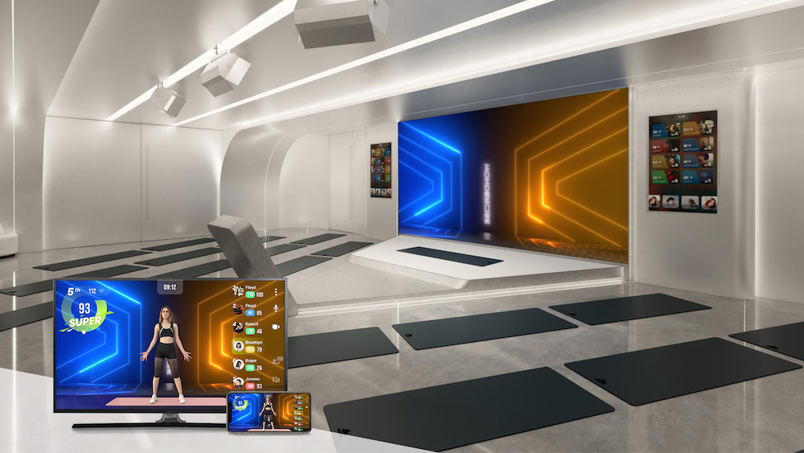
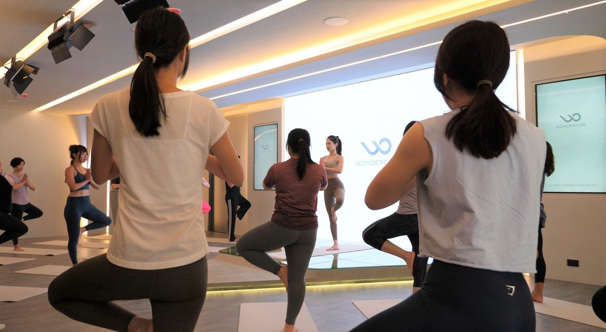
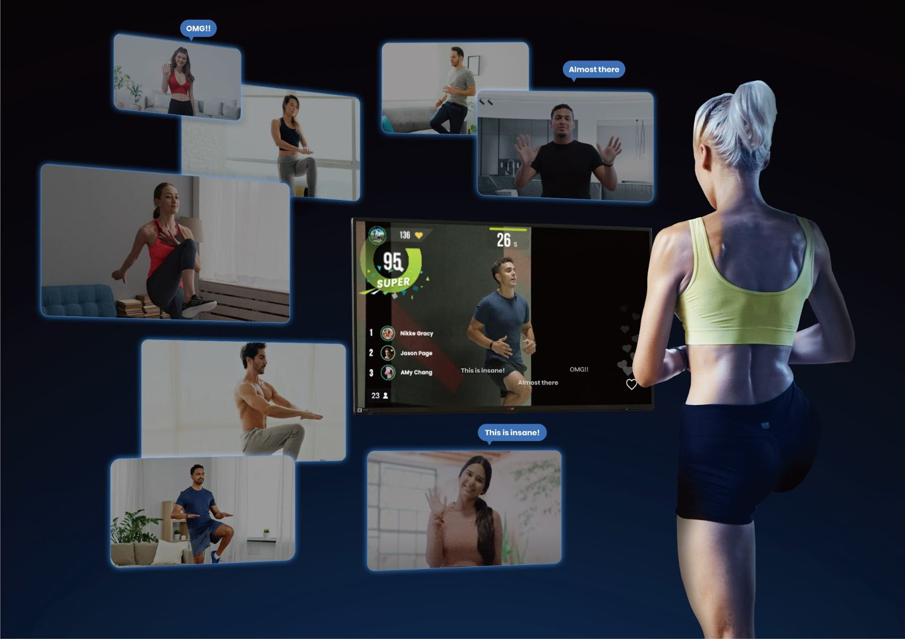
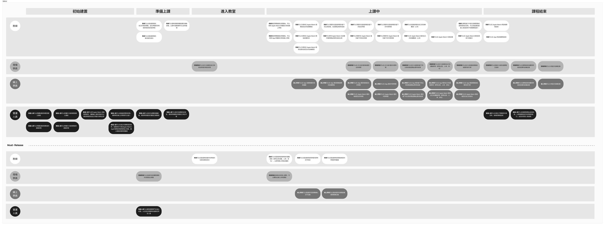
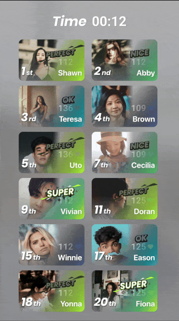
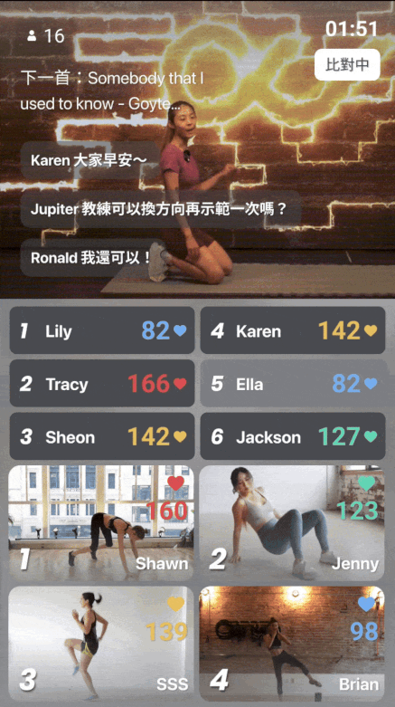
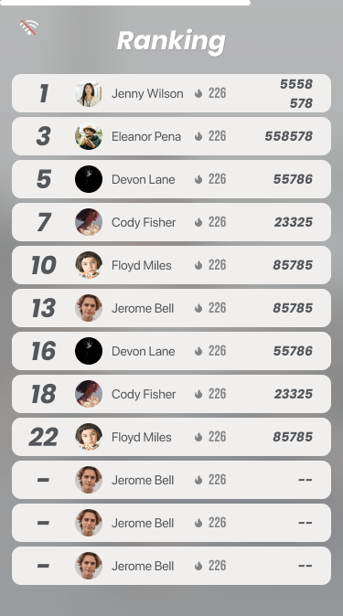
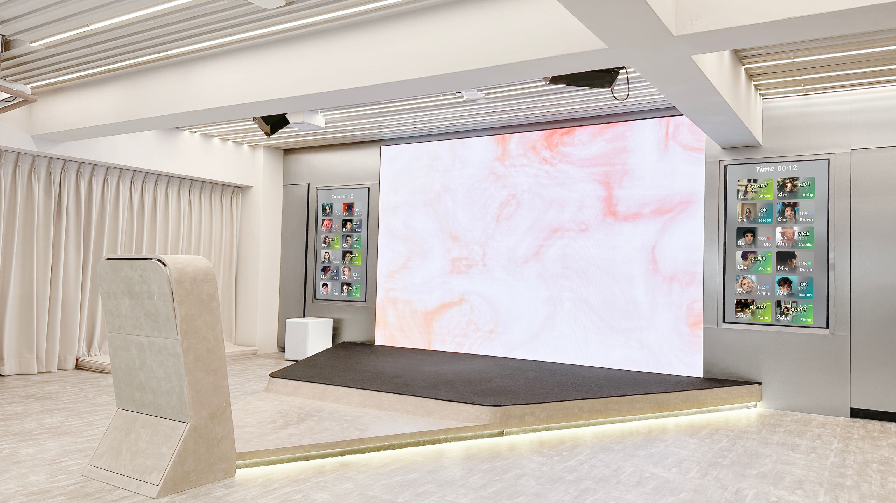
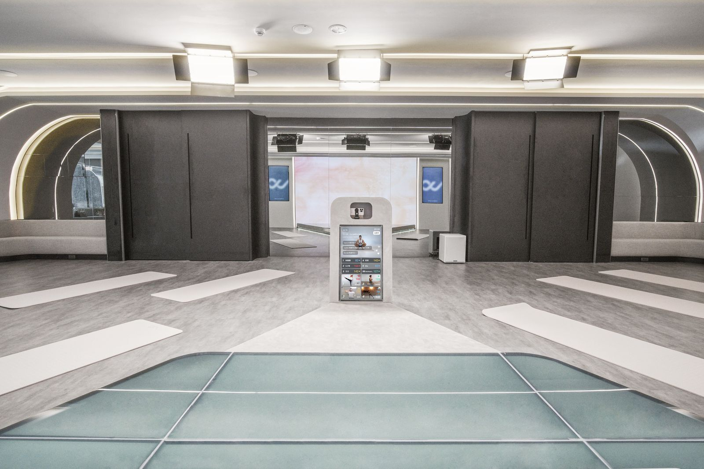

Wondercise O2O 課程系統
用 MVP 思維整合線上線下體驗
快速設計與開發、整合多方角色需求的課程管理平台

本專案為 Wondercise 所規劃之 O2O 課程系統，目標是整合線下場館、教練、後台營運與線上會員的操作需求，並在有限時間內設計出可行的 MVP，兼顧體驗與開發效益。設計過程中，我以系統化觀點出發，規劃功能模組、資訊結構與界面設計，確保各方操作邏輯一致，並能迅速上線驗證成效。
🎯 專案目標
- 以 MVP 思維快速驗證產品可行性
- 整合線上、線下、教練、營運端需求
- 設計操作簡潔、結構一致的系統介面
- 降低開發與維護成本
🧑 我的角色
- UI/UX 設計師
- 負責跨角色需求整合與流程優化
- 制定資訊架構與界面規範
- 協作工程與 PM，落實最小可行產品

❗ 現況挑戰
- 原有系統以線上串流為主，缺乏支援線下場館營運的完整流程
- 在有限的時間成本與人力去做出一個ＭＶＰ版本
- 營運端需額外使用 Excel 或第三方工具進行場地與時段管理
- 從0開始開發可能會較符合情境，但成本過高
🔎 洞察分析
需以「教練日常工作」為核心設計流程，並讓會員端清楚呈現課表與打卡資訊。
分析出每個情境的必要使用者故事，並融合出可相互通用的設計
以現有的系統去設計出符合使用者體驗且滿足最低開發成本的版本

🧭 設計流程
Step 1｜盤點使用者角色與流程

Step 2｜建立課程規則與場館邏輯

Step 3｜ UI 設計





✅ 成效成果
- 上線速度快、有效驗證商業模式：從設計到開發僅花費三個月完成 MVP 上線，有效支援 O2O 課程整合與營運驗證。
- 多角色系統成功整合：系統設計同時滿足教練、線上學員、線下學員與營運後台的操作需求，使用邏輯一致、操作易於上手。
- 降低開發與維運成本：資訊架構模組化設計、元件可複用，有效降低後續擴充與維運人力。
🧠 專案反思
最大挑戰在於：需滿足不同使用者（如教練與學員）對於介面與功能的期待，並維持操作一致性與流程順暢性。我也學習如何在初期就明確定義需求邊界，透過模組化設計兼顧靈活擴充與後續迭代。但因為快速版本也導致某些運動（類似瑜珈）的體驗情境不符合的狀況產生。